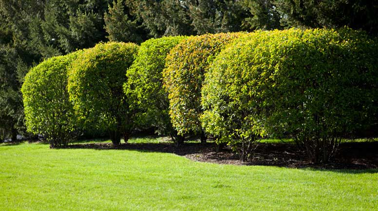

![Herbs are delicate and diminutive plants, often reaching only a few inches in height. Their stems and leaves are tender, succulent, and bursting with vibrant colors and fragrances. Despite their small size, these plants are highly valued for their multitude of uses. From enriching the flavor of dishes to providing medicinal benefits, herbs are an essential part of many cultures and cuisines around the world. At the end of each growing season, these tiny plants gracefully wither away, leaving behind memories of their unique and delightful qualities.](./images/gallery_images/Herbs.Webp "Image 1")
Herbs

Scrubs

Trees

Climbers

Creepers
![Mammals are a diverse group of animals characterized by their ability to regulate their body temperature internally, their unique skeletal structure, and the presence of hair or fur covering their skin. They are also distinguished by their ability to give birth to live offspring, which they nourish with milk produced by specialized mammary glands. Mammals are found in a variety of habitats, from the icy waters of the Arctic to the hot and humid rainforests of the tropics, and have adapted to occupy a wide range of ecological niches.](./images/gallery_images/Mammals.png "Image 6")
Mammals
![Amphibians are fascinating creatures that experience a remarkable transformation during their life cycle. Typically starting as aquatic larvae, such as tadpoles, they undergo a metamorphosis that leads to their development into adult terrestrial forms. This process involves a range of physiological and morphological changes, including the development of limbs, the growth of lungs, and the reabsorption of their tails. It's a truly remarkable process that demonstrates the incredible adaptability of these cold-blooded vertebrates](./images/gallery_images/Amphibians.jpg "Image 7")
Amphibians
![Birds, the feathered creatures that take to the skies, are a fascinating group of warm-blooded animals. They are easily recognized by their unique features including their hard-shelled eggs, lightweight feathers that provide insulation and enable flight, and their beaks, which come in a variety of shapes and sizes adapted to their respective diets and lifestyles. Birds are found all over the world, from the smallest hummingbird to the largest ostrich, and play an important role in many ecosystems, from pollination to seed dispersal.](./images/gallery_images/Birds.jpg "Image 8")
Birds
![Fish are fascinating creatures that live in a vast variety of aquatic environments. They have adapted to their surroundings with unique features such as gills, which allow them to extract oxygen from water, fins that help them swim and maneuver, and scales that protect them from predators and regulate their body temperature. Unlike warm-blooded animals, fish are cold-blooded, so their body temperature is influenced by the temperature of their surroundings. This incredible adaptation allows them to thrive in environments ranging from the icy depths of the ocean to the tepid waters of tropical reefs.](./images/gallery_images/Fishes.jpg "Image 9")
Fishes
![Reptiles are a fascinating group of animals that belong to the class Reptilia. They are characterized by their scaly, dry skin that helps them retain moisture in their body. Unlike mammals and birds, reptiles are cold-blooded, which means their body temperature is regulated by their environment. They are known to lay soft-shelled eggs on land, which they incubate until they hatch. Reptiles come in a wide variety of shapes and sizes, ranging from tiny geckos to massive crocodiles. They are incredibly diverse and can be found in almost every corner of the globe, from deserts to rainforests, and from oceans to freshwater lakes and rivers. Some of the most well-known reptiles include snakes, lizards, turtles, crocodiles, and alligators](./images/gallery_images/Reptiles.jpg "Image 10")
Reptiles
X